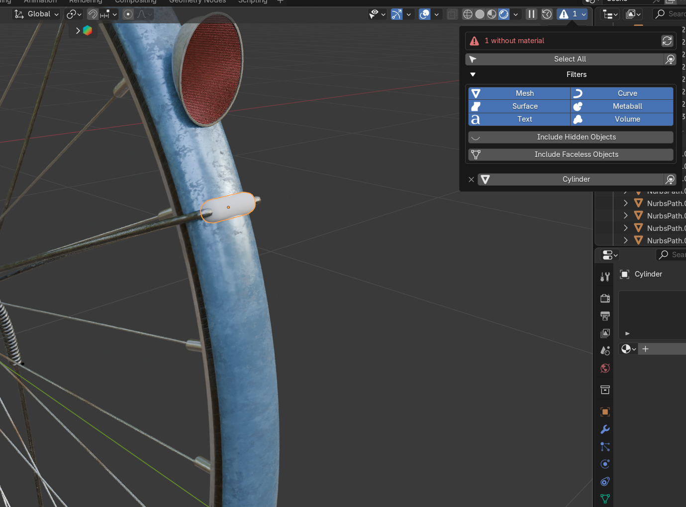

Blender add-on
Material-less Object Counter
Instantly count and track down every object in your scene that has no material.

Features
- See it at a glanceA header counter shows how many objects still have no material — a red warning while any remain, a checkmark once every object is covered.
- Jump straight to themClick any object in the list to select it, zoom the viewport to frame it, or Select All to grab them in one go.
- Filter preciselyNarrow by object type, include or exclude hidden objects, and choose whether faceless objects count. Faces built by modifiers like Skin are detected correctly.
- Right where you workShow the button in the 3D Viewport, Shader Editor, Outliner, or Properties header — on the left or the right.
Requirements & notes
Requirements
Requires Blender 4.2 or later. Pure Python — runs on Windows, macOS, and Linux.
Good to know
Counts objects that can hold materials (mesh, curve, surface, metaball, text, volume) and have either no material slots or only empty ones. By default, objects with no faces — even after modifiers — and objects hidden in the viewport are skipped; both can be turned on in the filters. Counts are tracked per view layer.
Install
- Download the .py file on the right.
- In Blender, open Edit ▸ Preferences ▸ Add-ons.
- Open the ▾ menu at the top-right, choose "Install from Disk…", then pick the .py file.
- Turn the add-on on with its checkbox, then find it in any editor header and in the Sidebar (N) ▸ "No Material" tab.
Never ship a scene with a forgotten grey mesh again.
Material-less Object Counter
Blender add-on
Version1.0.0
Blender4.2+
OSAll
Free and open. Everything runs locally in Blender — nothing is uploaded.